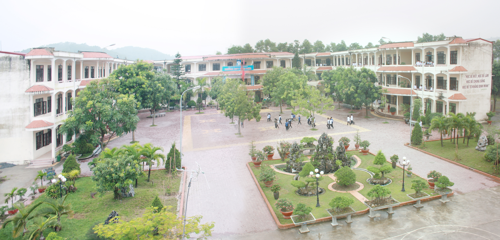

私の出身国について
ベトナム社会主義共和国は、インドシナ半島の東の東南アジアの中央に位置し、北から中国、ラオス、 カンボジア、そして西から東に接しています。 南は東海と太平洋を見ます。 ベトナム沿岸は3 260 kmの長さであり、国境は4 510 kmの長さです。 本土では、北部地点から最南端地点（フライウェイ による）までの長さは650 km、最東端から最西端までの最長地点は600 km（北）、400 km（南部地域） で、最も狭い場所は50 kmです。 （クアンビン）。 子午線：102º08 ' - 109º28'東緯度：8º02 ' - 23º23'北ベトナムはインド洋から太平洋への交通の中心地です。
ベトナムとは
ベトナムには54の民族グループがあり、北から南まで多様で豊かな文化を持っています。 各人、
各地域、各地域を通じて存在する多様性と豊富さ。 ベトナムは各地域の特定の芸術や歴史の時代
についての無数の無形文化遺産を持っていることを誇りに思っています。 ベトナムはユネスコに
よって認識されている多くの有名な風景を持つ美しい国です、特にベトナムのハロン湾は11/11/2
011に7つの新しい世界の自然の驚異のうちの1つとして認識されています。
私の通った高校
私の出身高学校は、LE ICH MOC 高学校というです。 就労人口の少ない新しい学校として、ほとんどの家庭の家族は農業や手工芸品の生産に従事しているため、子供たちを教育するための重要な条件はほとんどありません。学区への入り口が最も低い。 2002年から2003年の学年度では、学校の最初の学年では、6年生、12年生、6年生、11年生、9年生を含む21のクラスに1000人の永久学生がいました。 5歳以上29歳の熟練労働者の数は、1〜2年間ですべて新しいものです。マネージャーは2人の副学長（1人の副学長が学校を担当）を持っています。これは多くの困難と課題を抱える学年です。学校はちょうど教育年度および学習年度の要件を満たすにはまだ少なすぎる教育および学習活動のためのすべての機器を構築しました。地元の指導者、教育および訓練部門、特に両親と生徒会の奨励を奨励することへの関心、責任感、高い率先、教師の集まり学校は「イノベーション - 規律 - 品質」の精神の中で学年の任務を迅速に実行することの困難を克服することを決意した安定した組織に着手しました。 最初から、教師は学校の全体的な教育の質において決定的な役割を果たす要因であると判断されます。そのため、教師の職業能力と専門的資格の育成に注意を払ってください。最優先事項はメンバーです。学校はレベル5の大学院教師、レベルの政治理論に中央管理職員を派遣しましたハイフォン教育訓練省によって組織された専門的な訓練。学校の経営モットーは、規律を築き、チームを徐々に安定させ、専門的な解決策を強化し、教育や学習のための施設や設備に緊急に投資することに集中することです。それ自身の内的な力で上がって、学校はエミュレーションと刺激的な社会運動を教えて、学ぶ雰囲気を作り出しました。 教育と学習の仕事はかなりよく準備されていて、かなり優秀な学生を育てること、弱い学生のために個別指導すること、タイムリーな学生個別指導に注意を払うことです。体育、防衛、伝統教育、文化、芸術、スポーツこの取り組みが、学校にいくつかの有望な初期の成果をもたらしました。3人の都市レベルの優秀な先生、6人の草の根レベルの優秀な先生、2％の優秀な生徒、38％の生徒出生が早い。 2002年に防衛教育コンペティションの第2位を受賞。第1位は2003年にThuy Nguyen地区のViet Tien Tien Phongチームの全チーム（男性と2番目の女性チームメイトの大部分）に授与されました。3スポーツメダル2003年のシティスポーツと優秀な学生。市内の優秀な学生のための3つの一等賞。 学校の初期の結果は徐々に教育と訓練の質によって自分自身を確認しています、学校は教育と訓練部門の両親とリーダーのための自信を作成しました。ヴァンは始まりであり、学校の最大の願いは次のとおりです。近代化の方向で教育機器に十分に投資し、教育と学習の質を高め、生徒と保護者が学習する自信をつけること。都市部を含む困難な山岳地帯の人々の教育の権利を保障する。 教育の強い流れの中のホア - 「イノベーション - 規律 - 品質」の精神をもつトレーニング、ル・イックモック高校は若い才能と労働者を育てるためのゆりかごになりますTrang Nguyen Le Ich Mocという名前の学校に値する明日の故郷のための有用な活動。 